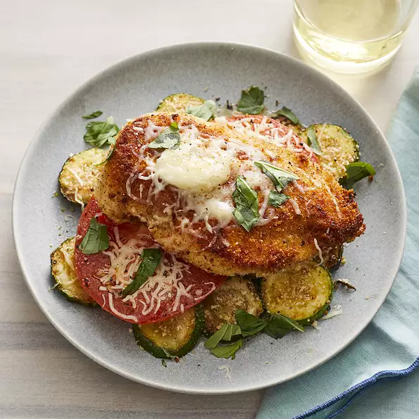

Chicken Tray Bake

A hearty meal that can be all cooked on a single oven tray.
This easy to prepare meal is a healthy favourite of mine. Easy to prepare and can be made in big batches to have meals ready for the week!
Ingredients
(measurements are guidelines, feel free to adjust to taste)
- 1 egg
- 1 tbsp. water
- 1/2 tsp. salt
- 1/8 tsp. ground black pepper
- 1 cup dry bread crumbs
- 2 tbsp. olive oil
- 4 skinless, boneless chicken breast halves
- 1 tbsp. minced garlic
- 2 tbsp. olive oil
- 5 zucchinis, sliced
- 4 tomatoes, sliced
- 2 teaspoons chopped fresh basil
- 2/3 cup shredded mozzarella cheese
- 1/3 cup shredded mozzarella cheese (in a separate bowl)
Steps
- Preheat oven to 400 degrees F (205 degrees C). Lightly grease a 9x13-inch baking dish.
- Beat egg, water, salt and pepper in a shallow bowl. Set 2 tablespoons bread crumbs aside; pour remaining bread crumbs into a large resealable plastic bag. Dip chicken in egg mixture then place in bag and shake to coat.
- Heat 2 tablespoons olive oil in a large skillet over medium heat. Cook chicken in skillet until browned, 2 to 3 minutes per side. Remove chicken from pan. Add remaining 2 tablespoons oil to skillet; cook and stir zucchini and garlic over medium heat until zucchini is slightly tender, about 2 minutes. Transfer to prepared baking dish.
- Sprinkle 2 tablespoons reserved bread crumbs over zucchini. Top with tomato slices, 2/3 cup mozzarella cheese and basil. Place Chicken on top of zucchini layer. Cover baking dish with aluminium foil.
- Bake in preheated oven until chicken is no longer pink in the center and juices run clear, about 25 minutes. An instant-read thermometer inserted into the centre should read at least 165 degrees (74 degrees C). Uncover and sprinkle with remaining mozzarella cheese. Bake until cheese is melted, about 5 minutes.
Nutrition Facts
Per Serving: 506 calories; protein 39.8g; carbohydrates 34.1g; fat 24.1g; cholesterol 129.2mg; sodium 768.4mg.
Back to home
Recipe Source